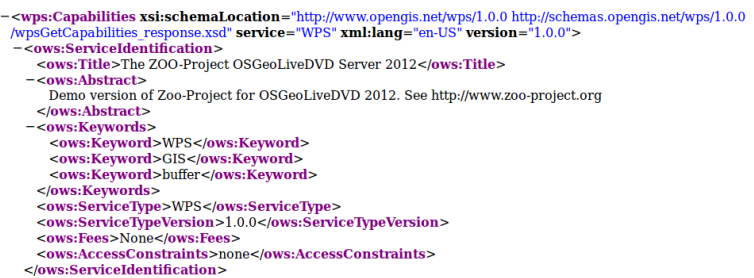
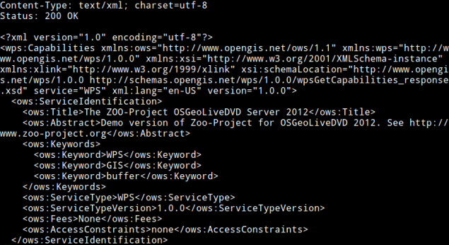

Table of Contents
As already said in introduction, an OSGeoLive virtual machine image disk has been installed on your computer, allowing you to use ZOO-Kernel in a development environment directly. Every ZOO-Project related material and source code have been placed in /home/user/zoo-ws-2012 directory. We will work with file included in this directory during this workshop.
Note
we will use ZOO-Kernel or zoo_loader.cgi script without any distinction in this document.
As explained later, the ZOO-Kernel may require to store temporary files in /var/www/temp. Depending on parameters set in the main.cfg, cache files would be located in the same directory.
sudo mkdir /var/www/tmp
sudo chown www-data /var/www/tmp
General ZOO-Kernel settings are made in the main.cfg file located in the same directory as the ZOO-Kernel, so in /usr/lib/cgi-bin/. You can see a typical main.cfg content in the following:
1 2 3 4 5 6 7 8 9 10 11 12 13 14 15 16 17 18 19 20 21 22 23 24 25 26 27 28 29 30 31 32 33 | [main]
lang=en-US,fr-FR,ja-JP
version=1.0.0
encoding=utf-8
serverAddress=http://localhost/zoo/
dataPath=/var/www/data
tmpPath=/var/www/tmp
tmpUrl=../tmp
cacheDir=/var/www/cache/
mapserverAddress=http://localhost/cgi-bin/mapserv
msOgcVersion=1.0.0
[identification]
title=The ZOO-Project FOSS4G 2012 Prague Workshop
keywords=WPS,GIS,buffer
abstract=ZOO-Project platform 2012 .See http://www.zoo-project.org for more informations
accessConstraints=none
fees=None
[provider]
positionName=Developer
providerName=ZOO-Project
addressAdministrativeArea=Lattes
addressDeliveryPoint=1280 Av. des Platanes
addressCountry=fr
phoneVoice=False
addressPostalCode=34970
role=Dev
providerSite=http://www.zoo-project.org
phoneFacsimile=False
addressElectronicMailAddress=gerald.fenoy@geolabs.fr
addressCity=Lattes
individualName=Gérald FENOY
|
The main.cfg file contains metadata informations about the identification and provider but also some important settings. The file is composed of various sections, namely [main], [identification] and [provider] per default.
The [identification] and [provider] section are specific to OGC metadata and should be set [3].
Obviously, you are free to add new sections to this file if you need more. Nevertheless, you have to know that there is some specific names you should use only for specific needs: [env], [lenv] and [senv].
Warning
[senv] and [lenv] are used / produced on runtime internaly by the ZOO-Kernel and should be defined only from the Service code.
The env section is used to store specific environment variables you want to be set prior to load your Services Provider and run your Service. A typical example, is when your Service requires to access to a X server running on framebuffer, then you will have to set the DISPLAY environnement variable, in this case you would add DISPLAY=:1 line in your [env] section.
The lenv is used to store runtime informations automatically set by the ZOO-Kernel before running your service and can be accesses / updated from it:
- sid: the service unique identifier,
- status: the current progress value (value between 0 and 100, percent),
- cwd: the current working directory of the ZOO-Kernel,
- message: an error message when returning SERVICE_FAILED (optional),
- cookie: the cookie your service want to return to the client (for authentication purpose or tracking).
returned cookie.
conf["lenv"]["cookie"]="XXX=XXX1000000; path=/"
conf["senv"]={"XXX": "XXX1000000","login": "demoUser"}
That means that the ZOO-Kernel will create a file sess_XXX1000000.cfg in the cacheDir and return the specified cookie to the client. Each time the client will request the ZOO-Kernel using the Cookie, it will automatically load the value stored before running your service. You can then easilly access this informations from your service source code. This functionality won’t be used in the following presentation.
You can request ZOO-Kernel using the following link from your Internet browser:
http://localhost/cgi-bin/zoo_loader.cgi?Request=GetCapabilities&Service=WPS
You should get a valid Capabilities XML document, looking like the following :
Please note that some Process node are returned in the ProcessOfferings section, as somes are available already on OSGeoLive DVD. You can also run a GetCapabilities request from the command line, using the following command:
cd /usr/lib/cgi-bin
./zoo_loader.cgi “request=GetCapabilities&service=WPS”
The same result as in your browser will be returned, as shown in the following screenshot:
Invoking ZOO Kernel from command line can be helpful during development process of new Services.
Footnotes
| [1] | when you use GET requests passed through xlink:href the ZOO-Kernel will execute the request only once, the first time you will ask for this ressource and it will store on disk the result. The next time you will need the same feature, the cached file will be used which make your process running faster. If cachedir was not specified in the main.cfg then tmpPath value will be used. |
| [2] | since version 1.3dev, when MapServer is activated, your service can automatically return a WMS, WFS or WCS request to expose your data. Your can set here the specific version number you want to use to request your local MapServer setup. It depends mostly on the client capability to deal with specific OGC Web Services version. |
| [3] | since version 1.3dev, when MapServer is activated, the same metadata will be used for setting metadata for OGC Web Services. |
| [4] | If you’re not familiar with ZOO-Project, you can pass this part and come to it after the next section. |
{kind=link}
{kind=link}